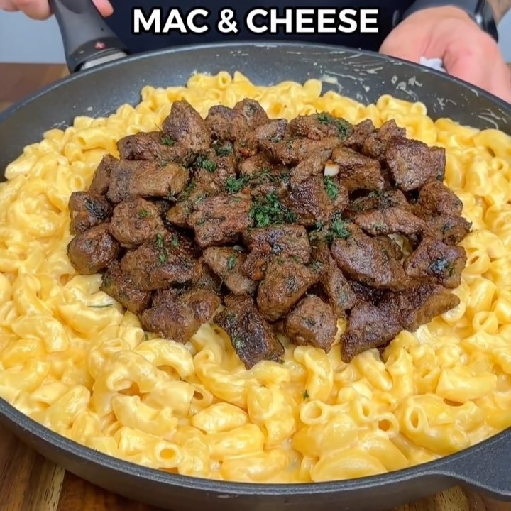

Macarrones con queso y bistec
Ingredientes:
*4 porciones
- 720 g de carne de res magra en cubos
- 1 cucharadita de sal
- 1 cucharadita de perejil fresco
- ½ cucharadita de pimienta negra
- 1 cucharadita de ajo en polvo
- 1 cucharadita de cebolla en polvo
- 6 dientes de ajo picados
- 25 g de mantequilla ligera
- 340 ml de leche evaporada sin grasa
- 85 g de queso crema ligero
- 40 g de queso mozzarella rallado bajo en grasa
- 40 g de queso cheddar rallado bajo en grasa
Instrucciones:
- A la carne, añade la sal, perejil, pimienta, y ajo y cebolla en polvo y revuelve
- Cocina la carne a fuego medio alto hasta que quede crujiente
- Añade la mantequilla, los dientes de ajo y el perejil. Revuelve hasta que quede bien combinado todo
- Cocina los macarrones en una olla con agua
- Para la salsa, en una sartén a fuego lento vierte la leche evaporada, así como la sal y el ajo en
polvo, queso crema, y revuelve hasta que se derrita todo
- Ya derretido, añade el queso mozzarella y cheddar, y sigue revolviendo hasta conseguir una
consistencia cremosa
- Añade la pasta a la sartén con la salsa y revuelve bien. Finalmente, en la misma sartén, añade la
carne.